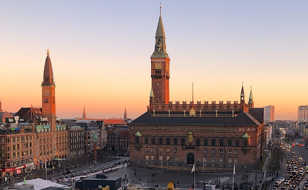
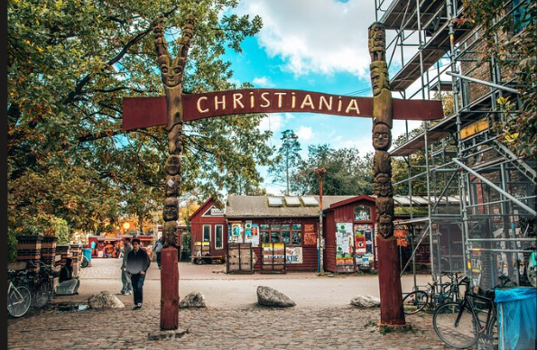
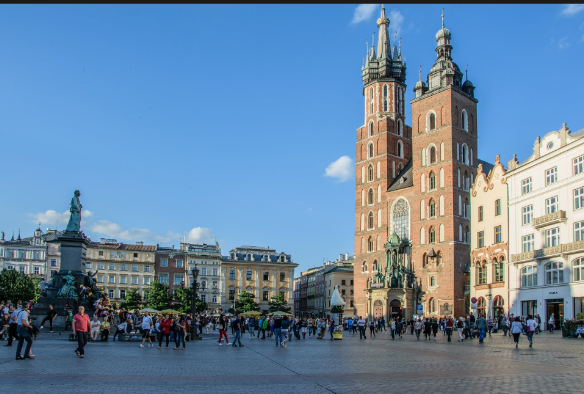
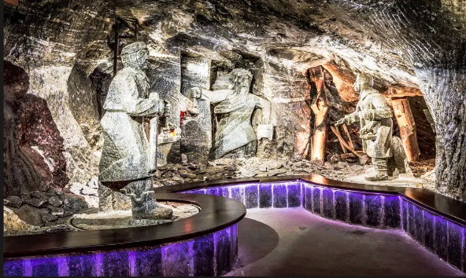

Summer 2026 Solo Adventure
Copenhagen to Krakow
A bold travel mission in progress. This log tracks city-center miles, fearless solo decisions, and the moments that make the journey unforgettable.
Solo Adventuring
Street-Level Exploration
Forward Motion
About Me
The story behind this journey
Open about pageCopenhagen
August 21-26
Open city pageKrakow
August 26-30
Open city pageJourney Timeline
-
August 21 • FlightLisbon to Copenhagen TAP Air 752, 7:00 AM-11:45 AM.
-
August 21Arrival in Copenhagen and first city center wander.
-
August 22-25Explore Copenhagen neighborhoods, cafes, and local moments.
-
August 26 • FlightCopenhagen to Krakow Ryanair, 5:55 AM-7:30 AM.
-
August 27-29Discover Krakow city center, stories, and hidden gems.
-
August 30 • FlightKrakow to Lisbon Ryanair, 1:00 PM-4:05 PM. Final reflections and wrap-up.
Itinerary Details
- Copenhagen base window: August 21-26
- Krakow base window: August 26-30
- Trip style: Solo adventuring, city-center focus, spontaneous exploring.
- Theme: Bright sun energy, water views, beach calm, mountain strength.
Adventure Moodboard
Travel highlights from both cities.



